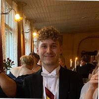

About Me
Personal information

BIO
I'm a happy and positive person and I get along well with different kinds of people. Whether it's a matter of hobby or work, I always work independently to keep my own skillset at the highest possible level to achieve team goals. I am also a fast learner and I am eager to learn new things and capabilities.
CURRENT EDUCATION
LUT-university
Master of science (M.Sc.), Economics and Business Administration
Major: Business Analytics
Minor: Software Engineering
PAST EDUCATION
LUT-university
Bachelor of science (B.Sc.), Economics and Business Administration
Major: Business Analytics
Minor: Technical Mathematics